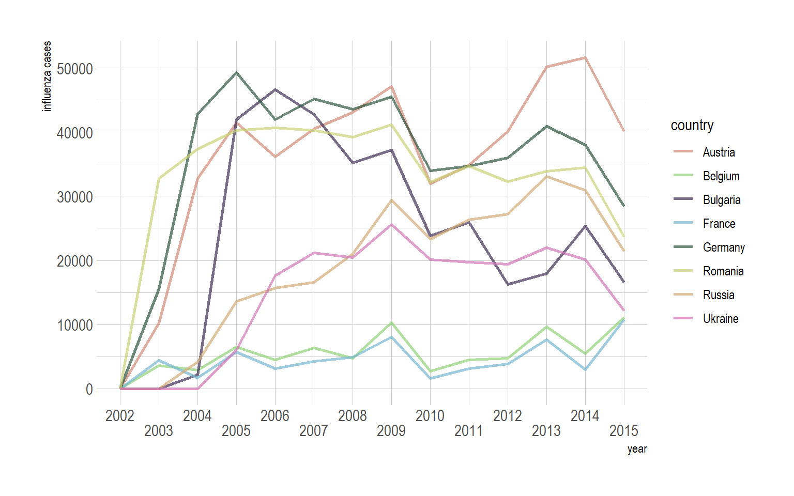
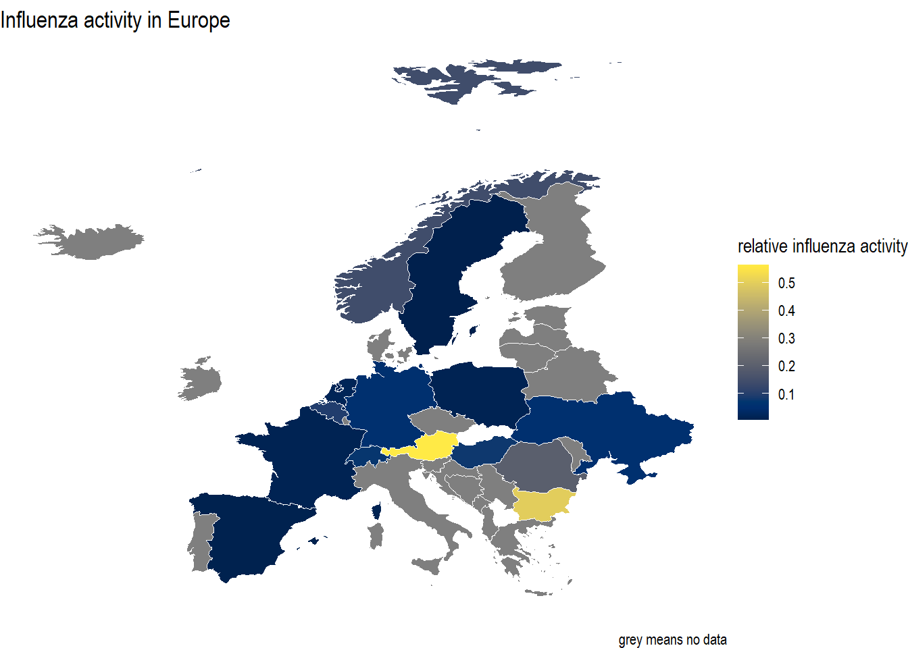
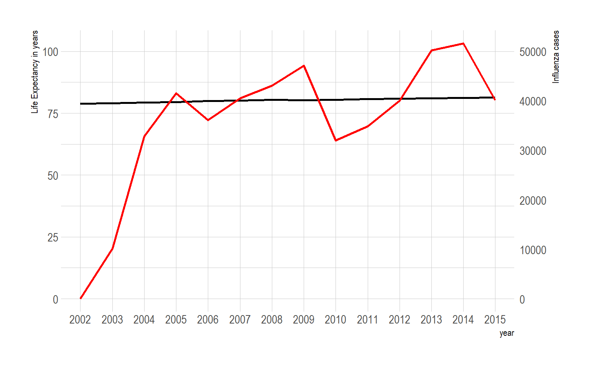

7 Influenza activity across europe
Influenza, commonly called the flu, is an infectious disease caused by The influenza virus. Symptoms can be quite mild; fever, runny nose, sore throat, cough, headache, muscle pain and fatigue. Or severe pneumonia, which can sometimes be attributed to a second respiratory infection by a bacteria. Influenza has a history of epidemic/pandemic outbreaks. There are seasonal epidemic outbreaks of influenza during the winter months when the humidity and temperatures are low, which favors transmission. There have also been four pandemics outbreaks of influenza since 1918. These pandemics happen when a Influenza strain from either an avian or swine population spreads to humans. The resulting strain is antigenically different from existing from previous circulating strains. Thus resulting in a fast transmission through a population which has yet to build up immunity. (Krammer et al. 2018)
Dengue fever, commonly called “break bone fever” is a disease caused by the dengue virus. It is transmitted by mosquitoes in tropical environments around the equator. Symptoms can be fever, headache and vomiting or in sever cases dengue hemorrhagic fever can occur, which is when the vascular permeability is increased causing a decrease in blood pressure. (Fever, n.d.)
library(tidyverse) #1.3.1
library(readxl) #1.3.1
library(here) #1.0.1
library(knitr) #1.33
library(captioner) #2.2.3.900
library(dslabs) #0.7.4
library(DBI) #1.1.1
library(RPostgreSQL) #0.6-2
library(remotes) #2.3.0
library(RPostgres) #1.3.2
library(hrbrthemes) #0.8.0
library(viridis) #0.6.1
library(kableExtra) #1.3.4source(here("src/port_src7.R"))7.1 Loading and colapsing data
The files “dengue_data.txt” and “flu_data.txt” are orginate from goolgle. Data Source: Google Flu Trends. the gapminder data comes from the package {dslabs}
dengue <- read.csv(here::here("data/dengue_data.txt"), skip = 11)
flu <- read.csv(here::here("data/flu_data.txt"), skip = 11)
data("gapminder")The data for influenza and dengue activity is not in a tidy format. Also the data in the gapminder dataset is per year, while the data for influenza and dengue activity is per week. By collapsing the data for flu and dengue activity the joining of these three datasets will be possible.
dengue <- dengue %>% pivot_longer(Argentina:Venezuela, names_to = "country", values_to = "value")
flu <- flu %>% pivot_longer(Argentina:Uruguay, names_to = "country", values_to = "value")dengue <- dengue %>% separate("Date", into = c("year", "month", "day"), sep = "-")
dengue <- dengue[-c(2,3)] #removing month and day
dengue$year <- as.integer(dengue$year)
dengue$country <- as.factor(dengue$country)
dengue <- dengue %>%
group_by(year, country) %>%
summarise("country" = country, "dengue_activity" = sum(value, na.rm = T)) %>%
unique()
flu <- flu %>% separate("Date", into = c("year", "month", "day"), sep = "-")
flu <- flu[-c(2,3)] #removing month and day
flu$year <- as.integer(flu$year)
flu$country <- as.factor(flu$country)
flu <- flu %>%
group_by(year, country) %>%
summarise("country" = country, "influenza_activity" = sum(value, na.rm = T)) %>%
unique()Table 2: The first ten rows of the resulting dataframe after collapsing all datapoint of each week into a total per year, and making the data into a tidy format.
| year | country | influenza_activity |
|---|---|---|
| 2002 | Argentina | 0 |
| 2002 | Australia | 0 |
| 2002 | Austria | 0 |
| 2002 | Belgium | 0 |
| 2002 | Bolivia | 0 |
| 2002 | Brazil | 174 |
| 2002 | Bulgaria | 0 |
| 2002 | Canada | 0 |
| 2002 | Chile | 0 |
| 2002 | France | 0 |
7.2 Storing new dataframes
#storing dataset locally
for (x in c("flu", "dengue", "gapminder")) {
export(get(x), path = paste0(here("output//"), x))
}#storing datasets on Dbeaver
dbWriteTable(con, "dengueDB", dengue, overwrite = T)
dbWriteTable(con, "fluDB", flu, overwrite = T)
dbWriteTable(con, "gapminderDB", gapminder, overwrite = T)Figure 1: The three dataset stored in a dbeaver database

Checking if the datasets are accessible:
SELECT
*
FROM
"dengueDB"
WHERE
country = 'Argentina';| year | country | dengue_activity |
|---|---|---|
| 2002 | Argentina | 0.000 |
| 2003 | Argentina | 1.397 |
| 2004 | Argentina | 1.533 |
| 2005 | Argentina | 1.035 |
| 2006 | Argentina | 1.007 |
| 2007 | Argentina | 5.569 |
| 2008 | Argentina | 1.462 |
| 2009 | Argentina | 16.739 |
| 2010 | Argentina | 6.621 |
| 2011 | Argentina | 3.186 |
SELECT
*
FROM
"fluDB"
WHERE
country = 'Netherlands';| year | country | influenza_activity |
|---|---|---|
| 2002 | Netherlands | 0 |
| 2003 | Netherlands | 786 |
| 2004 | Netherlands | 1014 |
| 2005 | Netherlands | 1779 |
| 2006 | Netherlands | 1497 |
| 2007 | Netherlands | 1607 |
| 2008 | Netherlands | 1801 |
| 2009 | Netherlands | 3062 |
| 2010 | Netherlands | 1145 |
| 2011 | Netherlands | 1627 |
SELECT
year,
population,
life_expectancy
FROM
"gapminderDB"
WHERE
country = 'Netherlands' AND
year >= 2002;| year | population | life_expectancy |
|---|---|---|
| 2002 | 16076427 | 78.5 |
| 2003 | 16167421 | 78.7 |
| 2004 | 16253397 | 79.1 |
| 2005 | 16331646 | 79.6 |
| 2006 | 16401105 | 79.9 |
| 2007 | 16463031 | 80.2 |
| 2008 | 16519862 | 80.3 |
| 2009 | 16575173 | 80.6 |
| 2010 | 16631571 | 80.8 |
| 2011 | 16689863 | 80.9 |
db_names <- c("fluDB", "dengueDB", "gapminderDB")
tables <- list()
for (i in db_names){
tables[[paste(i)]] <- dbReadTable(con, i)
}7.3 Joining dataset
To join the Influenza and dengue dataset with the gapminder dataset there is one problem:
tables$fluDB$year %>% unique()
tables$dengueDB$year %>% unique()## [1] 2002 2003 2004 2005 2006 2007 2008 2009 2010 2011 2012 2013 2014 2015
## [1] 2002 2003 2004 2005 2006 2007 2008 2009 2010 2011 2012 2013 2014 2015The data of flu and dengue are from the year 2002 until 2015. while the data of gapminder is from:
tables$gapminderDB$year %>% min()
tables$gapminderDB$year %>% max()## [1] 1960
## [1] 20161960 till 2016. Also the datasets contain data about different countries:
amount_factor(tables$fluDB$country)
amount_factor(tables$dengueDB$country)
amount_factor(tables$gapminderDB$country)## [1] "tables$fluDB$country has 29 levels."
## [1] "tables$dengueDB$country has 10 levels."
## [1] "tables$gapminderDB$country has 185 levels."levelF <- tables$fluDB$country %>% as.factor %>% levels()
levelD <- tables$dengueDB$country %>% as.factor %>% levels()
levelG <- tables$gapminderDB$country %>% as.factor %>% levels()
common(levelD, levelG) %>% length() == length(levelD) #common countries with gapminder equal to total countries of dengue## [1] TRUEAll the countries in the dengue data set are all also in the gapminder dataset. However the influenza dataset contains countries that the gapminder dataset does not.
common(levelF, levelG) %>% length() == length(levelF) #common countries with gapminder equal to total countries of influenza## [1] FALSElevelF[!levelF %in% common(levelF, levelG)] # the countries not in gapminder## [1] "New.Zealand" "South.Africa" "United.States"If the tables are to be joined they need to have data about only the countries and years equal to the countries and years that the tables have in common. Or the tables need to be joined in a way that NA is introduced where necessary.
#trimming the gapminder dataset so it contains the data of the same dates as the influenza and dengue dataset
gapminder_02_15 <- tables$gapminderDB %>% filter(between(year, 2002, 2015))dbWriteTable(con, "gapminder_02_15DB", gapminder_02_15, overwrite = T)CREATE TABLE joined_gapfluden
AS SELECT "gapminder_02_15DB".*, "fluDB".influenza_activity, "dengueDB".dengue_activity
FROM "gapminder_02_15DB"
LEFT JOIN "fluDB" ON public."fluDB".year = public."gapminder_02_15DB".year
AND public."fluDB".country = public."gapminder_02_15DB".country
LEFT JOIN "dengueDB" ON public."dengueDB".year = public."gapminder_02_15DB".year
AND public."dengueDB".country = public."gapminder_02_15DB".countryjoined_gapfluden <- dbReadTable(conn = con, "joined_gapfluden")dbDisconnect(con)The joined dataset contains data about 185 different countries, during the time period from 2002 until 2015. And also the influenza cases per country during this time.
joined_gapfluden$country <- joined_gapfluden$country %>% as.factor()
joined_gapfluden$year <- joined_gapfluden$year %>% as.factor()
joined_gapfluden$continent <- joined_gapfluden$continent %>% as.factor()
joined_gapfluden$region <- joined_gapfluden$region %>% as.factor()Table 3: The joinend table containing the gapminder dataset with influenza activity and dengue activity for the countries available. Where data for influenza or dengue activity was not available NA is introduced.
| country | year | infant_mortality | life_expectancy | fertility | population | gdp | continent | region | influenza_activity | dengue_activity |
|---|---|---|---|---|---|---|---|---|---|---|
| Argentina | 2002 | 17.1 | 74.3 | 2.38 | 37889443 | 242076212334 | Americas | South America | 0 | 0.000 |
| Australia | 2002 | 5.0 | 80.3 | 1.76 | 19514385 | 442135393399 | Oceania | Australia and New Zealand | 0 | NA |
| Austria | 2002 | 4.4 | 78.8 | 1.39 | 8114698 | 196998621885 | Europe | Western Europe | 0 | NA |
| Belgium | 2002 | 4.4 | 78.2 | 1.68 | 10364613 | 237741668285 | Europe | Western Europe | 0 | NA |
| Bolivia | 2002 | 53.7 | 68.7 | 3.98 | 8653343 | 8751510220 | Americas | South America | 0 | 0.101 |
| Brazil | 2002 | 24.3 | 71.4 | 2.26 | 181045592 | 670512665737 | Americas | South America | 174 | 0.073 |
7.4 Visualizing data
in 2009 a strain of influenza, the H1N1 influenza strain caused a pandemic known as the swine flu. The European countries who had the most influenza cases are:
EU_flu <- joined_gapfluden %>%
dplyr::filter(continent == "Europe", influenza_activity >= 10000) %>%
dplyr::select(country) %>%
unique() %>%
dplyr::pull() %>%
as.vector() %>%
print()## [1] "Austria" "Germany" "Romania" "Bulgaria" "Russia" "Ukraine" "Belgium" "France"Figure 2: influenza cases per country. The total influenza cases per year are shown for the european countries that exeeded a year total of 10000 cases.

Global cases peaked in 2009 at 586671.
Some countries had more influenza cases relative to their population during the peak than others.
Figure 4: Relative influenza activity in europe during 2009. Influenza activity is relative to the countries population. The swine flu was active during 2009. It’s visable in the map that Austria and Bulgaria had a high influenza activity during that time.

It is visible that Austria was had a relatively high influenza activity. Could this have effected life expectancy in Austria?
Figure 3: The total influanza cases per year of Austria (red). And the life expectancy in Austria (black). The spike in influenza cases during 2009 has no or neglible effect on the life expenctancy in Austria.
